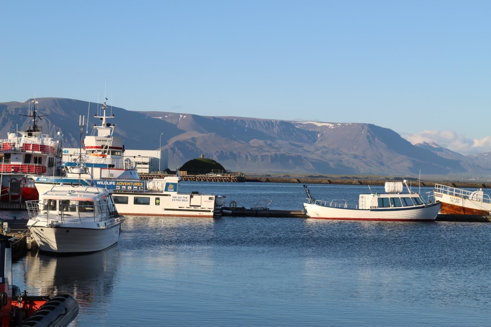
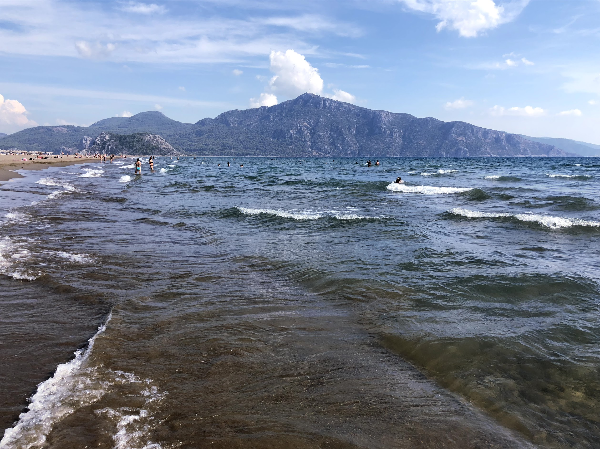

Sarah Wood
About Me
I moved out at 17, didn't understand what I wanted to be or know how to get there. I managed to get into a few different types of roles in Accounting, Customer Services, Information Management and Construction.
In each role I became the person who they would rely on for software or program training/development. I was able to pick things up very quickly and learn all the functions and short cuts. I used various Microsoft packages such as Excel, Word, Projects, Visio etc. I also used Sage Line 50, Sage Payroll, AutoCad and Oracles RS-SQL but I wanted to know how these programs works and how they were made.
Also I felt unfulfilled in any of these roles. I wasn't being mentally stimulated. I remember being bored at work and hitting the F12 key on any webpage I was on so I could inspect with DevTools. I wanted to know how it worked but I never had the confidence or know how. I thought this was something people went to university to study and that I had missed my chance.
However I re-met someone who I used to go to school with who now works for a social media company. They pointed me in the right direction and told me to do my research. I started saving and whilst I was trying to secure myself financially decided to start teaching myself how to code.
I have been researching and wanting to participate a course like this for a while now. Last year I began saving specifically so I can quit my job and commit to a course like this. My last day as General Manager was 30th August 2019. After this, I intend to devote myself to this career transition.
Whilst working, I still find time to finish courses on Udemy, Code Academy and exercises I am completing on Free Code Camp and Code Wars. I actively read articles from other developers and follow influential people in technology on social media to gage an understanding of the community.
My confidence has grown and now I want this more than ever. I could have the ability to influence and educate a larger audience on something I really believe in through a world that is driven by technology. And now nothing has ever been more important to me than becoming an Engineer.
My Hobbies
I love taking photographs and have recently purchased a Canon EOS 4000D DSLR camera. Here are my top four favourite images.
- Reykjavik Harbour - Iceland
- Turtle Beach Ortaca - Turkey
- Moulin Rouge Paris - France
- Bulgarian Mountains Sofia - Bulgaria
-
Reykjavik Harbour - Iceland
 -
Turtle Beach Ortaca - Turkey
 -
Moulin Rouge Paris - France
-
Bulgarian Mountains Sofia - Bulgaria
My Experience So Far
It is very minimum. I started researching coding bootcamps last year but have only started teaching myself how to program since February 2019.
I started with a computer science course on Udemy to understand the different types of development and what the options were. I then completed HTML and CSS on Code Academy and went back to Udemy where I completed Build Responsive Real World Websites with HTML5 and CSS3, JavaScript for beginners and Learn and understand NodeJS.
I have never worked or collaborated on a project and have never worked in tech/programming or as a software engineer but look forward to doing so in the future.
My Final Thoughts
Why would I make a good engineer? I'm passionate, determined and empathetic. I think my empathy is what have driven me in the past. I never like to see anyone struggle. I was always looking for better ways to do things, to make mine and other lives easier. I strived on improving efficiency and/or making it a more sustainable process.
When rolling out a new process or template I learnt to understand that everyone are on different levels and that I needed to be mindful of that. I have an eye for detail and can usually spot errors or situations where things will go wrong quickly. I alway try to implement solutions as quickly as I can.
I am in awe with what can be built through technology and the advances we have made to date. I want to be a part of that and help it grow along with the community.
I am a strategic planner, I like to understand what is required of me and the different ways to get there. I always double, triple check my work and refine if needed, run all possibilities and execute the best plan/solution. Being a General Manager meant I had to communicate with every department. Some with technical knowledge (designers) to some with practical knowledge (on site labourers) right through to admin support staff. I had to be able to translate requirements between departments throughout the whole of the company and show some level of transparency with my teams. It was all about finding the right balance to not offend anyone and to get the most out of them.